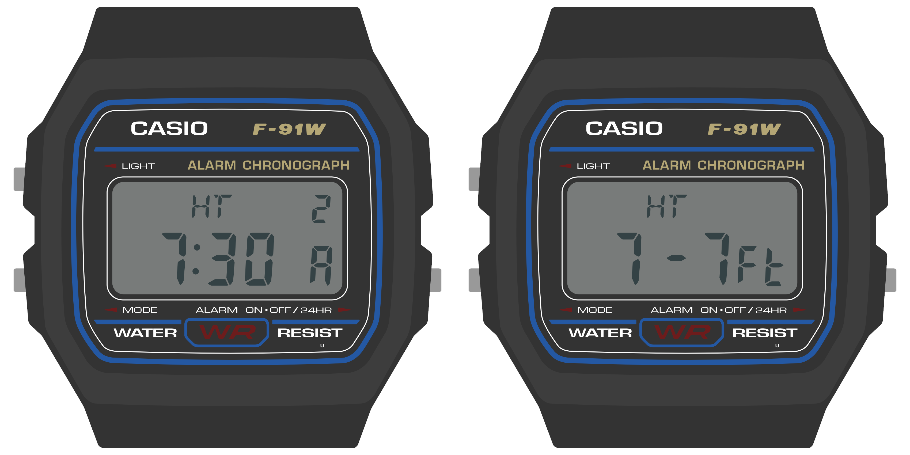
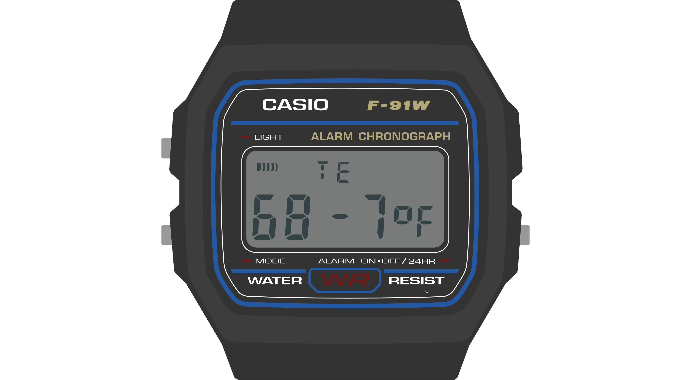
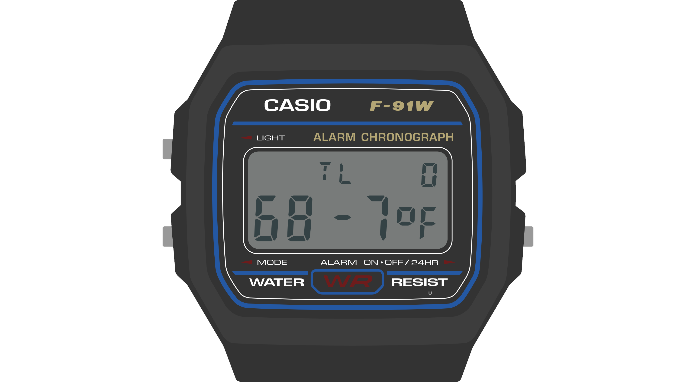
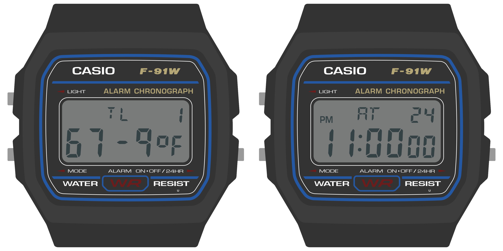
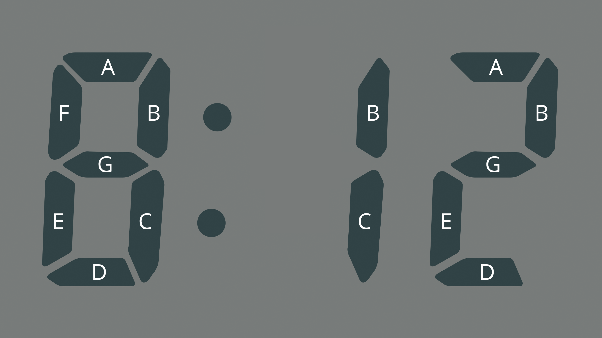
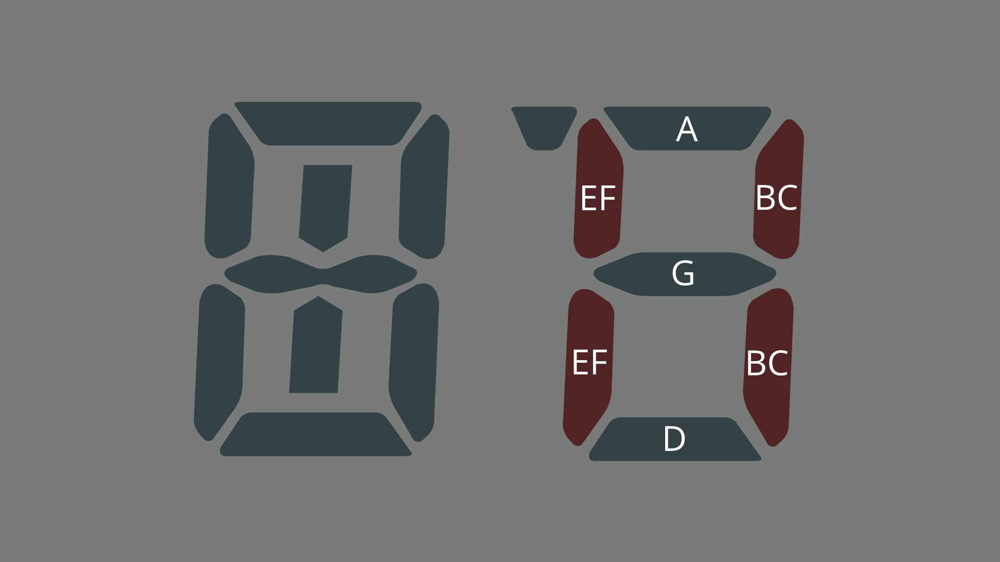
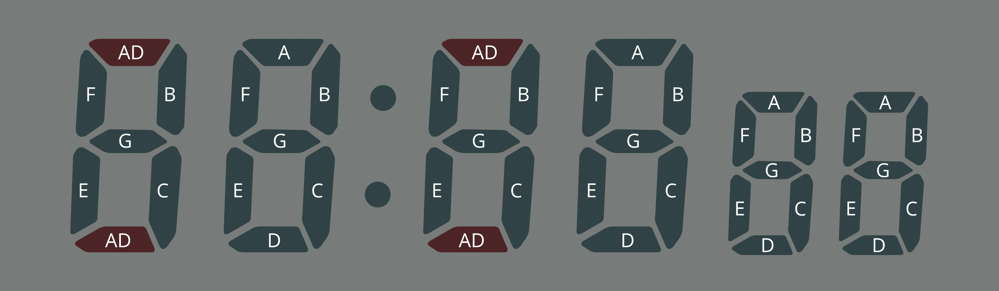
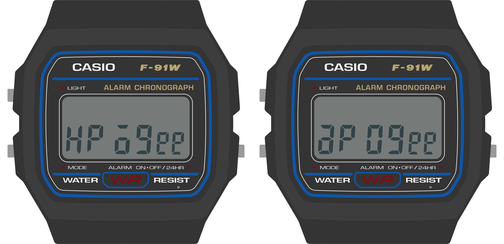
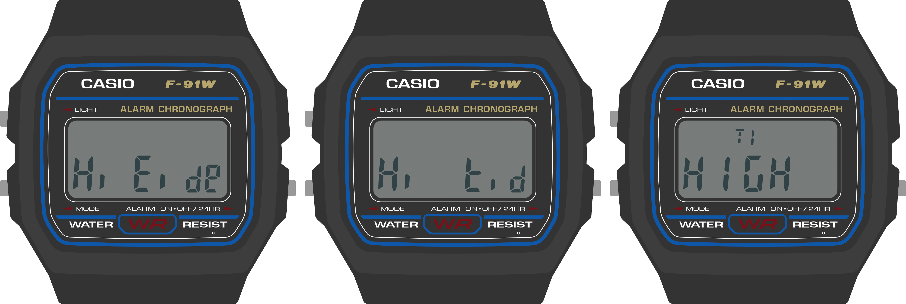
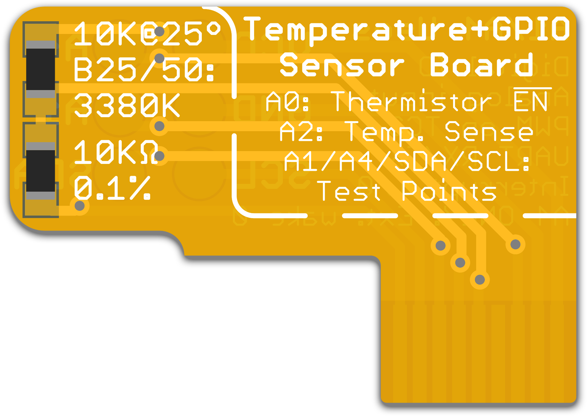

The Sensor Watch
The Sensor Watch is a board replacement for the classic Casio F‑91W wristwatch. It is powered by a Microchip SAM L22 microcontroller with built-in segment LCD controller. You can write your own programs for the watch using the provided watch library, program the watch over USB using the built-in UF2 bootloader, and then install the board in your existing watch case to run your own software on your wrist.

Features:
- ARM Cortex M0+ microcontroller
- 32KHz crystal for real-time clock with alarm function
- Ten digit segment LCD, plus five indicator segments
- Three interrupt capable buttons
- Red / green PWM’able LED backlight
- Optional piezo buzzer (requires some light soldering)
- On-board USB Micro B connector
- Reset button with double-tap UF2 bootloader
- Nine-pin flex PCB connector
Sensor Watch Firmware
While you can build any number of bare-metal applications for Sensor Watch, when we refer to the Sensor Watch firmware, we're really talking about Movement, the community firmware for Sensor Watch. You can read more about Movement here; for now, the important thing to know is that it manages a series of watch faces that you advance through using the mode button. It's a very similar idiom to the classic Casio F-91W, which advances from Clock -> Alarm -> Stopwatch -> Time Set, and then wraps around to Clock.
Movement offers many more watch faces — some of which, like World Clock, you can include more than once! Still: you'd be pressing the Mode button for hours if we included them all, so instead, we only build a subset of the available faces into any given firmware. This means that you can download an alternate firmware that includes the kind of functionality you want, or build custom firmware that includes just the watch faces you desire.
- Download prebuilt firmware for Sensor Watch
- Building custom firmware for Sensor Watch
- Building custom firmware for the Sensor Watch Emulator
Prebuilt Alternative Firmware for Sensor Watch
This section contains the stock firmware for Sensor Watch, as well as several prebuilt firmware images featuring an alternative set of watch faces.
Prebuilt Firmwares
Note that each fimware comes in two flavors, depending on the color of your circuit board. This is because blue boards have a red/blue LED and green boards have a red/green LED, and the pins are swapped. No damage will result from loading the wrong firmware onto your board, but the LED colors will be wrong.
Also note that all of these have the "Preferences" and "Time Set" screens at the end; for brevity they aren't included in this listing, but you will always have access to them.
- Movement Standard: Simple Clock, World Clock, Sunrise/Sunset, Moon Phase, Temperature
- Focus: Simple Clock, Tomato Timer, Stopwatch, Countdown
- The Athlete: Simple Clock, Stopwatch, Countdown, Exercise Counter, Pulsometer
- The Backpacker: Simple Clock, Sunrise/Sunset, Temperature, Temperature Log, Blinky Light
- The Stargazer: Simple Clock, Astronomy, Sunrise/Sunset, Moon Phase
- Deep Space Now: Simple Clock, Mars Time, World Clock x3
- alt.time: Simple Clock, Beat Time, Day One
Movement Standard
Required Sensor Board: Temperature Sensor
This is the standard firmware for Movement. It's packed, but not jam-packed:
- Simple Clock - A basic clock with date for timekeeping.
- World Clock - You can configure this with a custom two-letter title and any time zone.
- Sunrise/Sunset - Local sunrise and sunset times.
- Moon Phase - Tonight's moon phase. (press Alarm to see days in the future)
- Temperature - As measured from the temperature sensor board. (Alarm toggles C or F)
Download it now: for Green Boards and Blue Boards
Try it out: Sensor Watch Emulator
Focus
Required Mod: Tomato and countdown timer requires soldering the buzzer connector.
For folks who want to use the watch for productivity.
- Simple Clock - A basic clock with date for timekeeping.
- Tomato Timer (by Wesley Ellis) - A productivity timer varietal.
- Stopwatch (by Wesley Ellis) - A simple stopwatch with one-second resolution.
- Countdown (by Wesley Ellis) - A simple countdown timer for eggs, tea or tasks.
Download it now: for Green Boards and Blue Boards
Try it out: Sensor Watch Emulator
The Athlete
Required Mod: Countdown timer requires soldering the buzzer connector.
For folks who want to use the watch for fitness.
- Simple Clock - A basic clock with date for timekeeping.
- Stopwatch (by Wesley Ellis) - It counts up.
- Countdown (by Wesley Ellis) - It counts down.
- Exercise Counter (by Shogo Okamoto) - Designed for tracking a number of exercises by pressing the Alarm button.
- Pulsometer - Hold the Alarm button while touching a vein on your neck, and count 30 beats. Release for your heart rate.
Download it now: for Green Boards and Blue Boards
Try it out: Sensor Watch Emulator
The Backpacker
Required Sensor Board: Temperature Sensor
This watch face is focused on helping you when out in the backcountry.
- Simple Clock - A basic clock with date for timekeeping.
- Sunrise/Sunset - Local sunrise and sunset times. Don't get caught in the dark!
- Moon Phase - Tonight's moon phase. For when the sun fails you.
- Temperature - As measured from the temperature sensor board. (Alarm button toggles C or F)
- Temperature Log - A 36-hour log. Toss the watch outside your tent to measure overnight lows.
- Blinky Light - This will chew through your battery, but could be useful in an emergency.
Download it now: for Green Boards and Blue Boards
Try it out: Sensor Watch Emulator
The Stargazer
For folks who think space is the place!
- Simple Clock - A basic clock with date for timekeeping.
- Astronomy - Calculates altitude, azimuth, right ascension and declination for all planets
- Sunrise/Sunset - Local sunrise and sunset times.
- Moon Phase - Today's moon phase. (press Alarm to see days in the future)
Download it now: for Green Boards and Blue Boards
Try it out: Sensor Watch Emulator
Deep Space Now
For folks who work in deep space. (no, really!)
- Simple Clock - A basic clock with date for timekeeping.
- Mars Time - Displays Mars Standard Time, or local mean solar time and mission sol for each active mission on Mars.
- World Clock - One slot for the ground station in Goldstone (California, USA)
- World Clock - One slot for the ground station in Madrid (Spain)
- World Clock - One slot for the ground station in Canberra (Australia)
- Day One - Counts the number of days from a given date. Try plugging in the start of a mission (i.e. August 20, 1977) to get mission day.
Download it now: for Green Boards and Blue Boards
Try it out: Sensor Watch Emulator
alt.time
For fans of alternative timekeeping systems.
- Simple Clock - A basic clock with date for timekeeping.
- Beat Time (by Wesley Ellis) - AKA Swatch Internet Time, a decimal time standard centered on Switzerland.
- Day One - Counts the number of days from a given date. Try plugging in your birthday!
I hope to expand this face in the future. (International Fixed Calendar, anyone?)
Download it now: for Green Boards and Blue Boards
Try it out: Sensor Watch Emulator
Watch Interface Guidelines (WIG)
This document outlines best practices for developing watch faces for Movement, the community firmware for the Sensor Watch. While this is a rather specific scope, many of these concepts will be relevant to writing a bare-metal Sensor Watch app as well. After reading this document, you should have a sense for the hardware capabilities and limitations of Sensor Watch, the kinds of applications that are well-suited to the hardware, and the interaction models that tend to make for a rich and usable watch face.
Before we get to details, there are two major points that underly every piece of guidance in this document:
Sensor Watch is a watch
You’ll wear Sensor Watch on your wrist, and you’ll interact with it to answer questions about your day and the world around you. “When does the sun set this evening?” “How late is it in Berlin right now?” “What’s the high tide today?” These are the kinds of questions that Sensor Watch can excel at answering quickly and clearly.

Example: a tide prediction app, showing the time of the high tide and its predicted height.
Even when you add sensors like a thermometer, light sensor or accelerometer, you should think about how your watch face can answer these kinds of simple questions. “How cold was it last night?” “What shutter speed should I use in this lighting?” “Was I active enough today?”
Keeping these prompts simple keeps the focus on the things that Sensor Watch can do well, because:
Sensor Watch is not a smart watch
While Sensor Watch can have sensors added to it to measure things like temperature, light or acceleration, it’s not generally designed to synchronize these measurements to another device like a smart phone; in fact, by default, it has no way of syncing data to or from a device. This makes Sensor Watch less well suited to answering complex questions that require external data or a longer data trail; questions like “Will it rain tomorrow” require data the watch does not have, and questions like “How active was I last month?“ may be too complex to answer on a small watch with only a few buttons.
There are three key hardware differences between Sensor Watch and a smart watch:
- Whereas a smart watch has a high-resolution screen capable of displaying arbitrary graphics, Sensor Watch has a segment LCD with a fixed layout.
- Whereas a smart watch generally has a touch screen, Sensor Watch has just three buttons for input: the Light, Mode and Alarm (Wake) buttons.
- Whereas a smart watch has powerful processor and a battery that can be recharged daily, Sensor Watch has a much simpler processor, and a battery that must be discarded and replaced.
These differences have implications for how a watch face displays content, how the wearer will interact with a watch face, and how the watch face goes about running its logic:
- You will need to think carefully about how to format the information you want to display and make it work within the constraints of the segment LCD layout.
- You will need to make the most of the limited button inputs, especially since all of these buttons have default functions like changing the mode or illuminating the LED.
- You must take care to ensure that your watch face does not consume too much battery power. In addition, your watch face must be able to work gracefully with Movement’s low energy mode.
Road Map
This document is divided into five sections. First, we’ll talk about the “big picture” stuff: some of the concepts you should keep in mind when designing watch faces for Sensor Watch, some of what it does well, and some of what it doesn’t. Next, we’ll have three sections dedicated to each of those three key areas of functionality: the display, the buttons, and the low-power microcontroller. Finally, we’ll bring all of these concepts together to make a very simple watch face that says hello.
Big Picture Stuff
The Casio F‑91W, the donor watch on which Sensor Watch is based, is one of Casio’s smallest and simplest wristwatch designs. It is designed to show very basic information: the date and time. As we walk through the device’s hardware capabilities, we can see how it is tailored carefully to that use case:
- It has a small segment liquid crystal display with ten digits.
- It has a dim backlight on the left side of the display that mostly illuminates the hours and minutes.
- It has a buzzer for firing a single alarm, as well as an hourly alert.
- The three buttons on the watch offer very basic inputs:
- the “Light” button illuminates the watch face,
- the “Mode” button cycles through the four modes that the watch offers,
- and the “Alarm” button is the only truly multi-function button: it turns the alarms on or off when the alarm face is active, and swaps the main 12/24 hour mode when the main clock is active.

Sensor Watch inherits many of the same hardware limitations of the F‑91W: the screen is small, the layout is designed to display no more than ten characters at a time, and we have only those three buttons to work with (one of which is dedicated to switching modes). This leads to some broad guidelines that will be useful to think about when designing your watch face:
- Your watch face’s main interface should focus on presenting a single screen of useful information.
- If possible, your most important information should appear on the left side of the screen, since the LED will illuminate the left side more brightly than the right.
- You should feel free to use every character position and every indicator segment to its maximum potential! You have ten characters to work with; use them to the fullest.
- If you have more than one screen of information to display, you should hide it behind a press of either the “Alarm” or “Light” buttons...
- ...because your watch face should be prepared to resign immediately when the wearer presses the “Mode” button. (More on this in the “buttons” section!)
Let’s look at some of the watch faces that come with Sensor Watch to see how these guidelines are implemented in practice.
The Temperature Watch Face

This is the Temperature watch face. It displays the current temperature, as read from a thermistor voltage divider on a Sensor Watch accessory board.
This watch face is relatively simple. It's dominated by a single large piece of information: the current temperature. The wearer is able to absorb this information quickly and easily. The temperature data itself is left-justified. If the LED only illuminated the first two digits, the wearer would at least know that the temperature is in the range of 68 degrees. The fractional part, while useful, is not essential to a quick read of the conditions.
Also note that the “signal” indicator segment, used on the main watch face to indicate the status of the hourly beep, is here repurposed to indicate when a new reading is being taken. Don’t be afraid to use these indicators for your own purposes! Whereas the bell indicator might signal that an alarm is enabled on an alarm watch face, you may want to use it to signal an error or warning condition on another face. This is totally fine: the wearer will over time grow familiar with the layout of your watch face, and make the correct associations between icons and concepts.
The temperature display face is relatively simple; let’s take a look at a more complex watch face.
The Temperature Log Watch Face

This watch face stores a 36-hour log of temperature values, which the wearer can read back to get a sense of high and low temperatures over time. This seems at first glance like it might be a formidable challenge for a watch face with only ten digits, but by thinking carefully about the design, we can fit a lot of information on this small screen.
Let’s revisit the first guideline. This screen displays a useful, information-dense readout of the most recent temperature logged: the “TL” indicates the mode (Temperature Log), and the “0” at the top right indicates that this is the zeroth (i.e. most recent) reading taken. The whole bottom line is dedicated to a large, clear display of the logged temperature.
For clarity, it would be nice for this screen to display not just the index of the temperature reading, but also the time that the temperature reading was taken. There isn’t room for that on the display, but by pressing the “Light” button, the wearer can temporarily move the watch face into a mode that displays the timestamp of the reading:

This mode simply displays the timestamp for a second or so — this reading was taken at 12:00 AM on the 25th day of the month — and then returns the wearer to the temperature reading at that timestamp. This is a simple way to stack two aspects of the data point into one screen. If you had multiple aspects (say, temperature, humidity and timestamp) you might consider using the light button to cycle through those three aspects of the data point.
This handles the most recent temperature and timestamp. But what about our 36 hour log? The answer there lies in the other button, the “Alarm” button. Pressing the “Alarm” button moves one index back in the list of readings:

Once again, we’ve managed to fit more information onto the screen by hiding it behind a button press. The index at the top right makes clear that this is data point 1 (not data point 0), and again, pressing the “Light” button on this screen will display the timestamp for this reading: 11:00 PM on the 24th. Repeated presses of the “Alarm” button move the wearer back in time. At any time, the wearer can press the “Light” button to view the timestamp. And of course, the wearer can press “Mode” at any time to move from the temperature log face to the next face in the list.
Note that while the wearer is likely to develop familiarity with your watch face’s unique visual layout over time, they will likely expect the buttons to behave consistently between watch faces. They will always expect the “Mode” button, for example, to advance the watch face, and for the “Alarm” button to toggle settings or change values. Generally speaking, you should use the “Alarm” button to move through time or advance a value, and use the “Light” button to move between sub-modes within the watch face (and illuminate the LED, as appropriate). The “Time Set” watch face, for example, uses the “Light” button to move between setting the hour, minute and second, and uses the Alarm button to change the value in each field.
Wrapping Up
When designing watch face visuals for the Sensor Watch, you should aim to present one screen of content with clarity:
- Don’t shy from information density; use as many digits and indicators as you need.
- Try to fit more crucial information on the left side of the screen, and put less pressing information on the right.
- Don’t worry about how segments or digits are used on other watch faces; when your watch face is on screen, you are in control.
When designing interactions for the Sensor Watch, you should aim for consistency with other watch faces:
- Your watch face should resign immediately when the “Mode” button is pressed and pass control to the next watch face in the list.
- If your watch face has multiple modes, you should use the “Light” button to toggle or advance through them.
- If your watch face presents multiple data points or advances through multiple values, you should use the “Alarm” button to advance through those.
The Sensor Watch Display
Before we talk about the Sensor Watch display, let’s go through some key terminology to clarify our discussion:
- Segment - A single addressable element on the liquid crystal display
- Indicator - A segment like “PM”, “24H” or the bell icon that indicates status
- Digit - A grouping of segments that can display a number, character or glyph
- Position - The placement of a digit on the display; for example, the first digit at the left of the top row is Position 0
We also tend to label the segments of each digit clockwise from the top segment: the top segment is segment A, top right is B, bottom right is C, all the way to the center digit which is segment G:

In this image of a clock, you can see where the 8 has all segments (A-G) energized. You can display a 1 by energizing only segments B and C, and a 2 by energizing segments A, B, D, E and G.
The Sensor Watch has five indicators, ten digits, and one segment dedicated to the colon in the time display. We choose to number the digits as follows:
- Positions 0-1 - The digits in the top middle, usually used to display the current mode or the weekday. We can call these the “Weekday” digits.
- Positions 2-3 - The digits at the top right, usually used to display the day of the month. The “Day” digits.
- Positions 4-9 - The digits on the bottom row, usually used to display the time; the “Clock” digits.
- Positions 4-5 are normally the hours display.
- Positions 6-7 are normally the minutes display.
- Positions 8-9 are normally the seconds display, and are slightly smaller than the other digits on the bottom row.

As alluded to in the “Big Picture” section, this document is not going to be prescriptive about how you use the digits in these positions; there is no “must” about how you display information on your watch face. Still, there are some broad guidelines on where these digits can be most useful:
- The “Weekday” digits are particularly useful for displaying alphanumeric information.
- The “Day” digits are best for displaying a single number from 0-39, such as a day, an index or a countdown.
- The “Clock” digits are well suited for the main informational display of your watch face.
You are going to need flexibility to adapt the information you want to display to the Sensor Watch LCD. This section is merely going to walk through some useful patterns, some limitations, and some best practices.
The Weekday Digits
The digits in these first two positions, positions 0 and 1, have some extra segments that make them useful for displaying letters. The stock F‑91W uses these positions to display the day of the week (SU, MO, TU, etc). If you have some alphanumeric information to relay on your watch face, it would make sense to look to these first; the tide prediction concept in the previous section, for example, imagined labeling the displayed prediction with “HT” for high tide and “LT” for low tide.
If you have no data to put in these segments, they can also serve as a useful spot to title your watch face, so that the wearer is clear what information they are looking at. The “Temperature” watch face, for example, uses these digits to display “TE”. This distinguishes it from the “Temperature Log” watch face, which titles itself “TL”.
Note that you are not limited to keeping the same characters in this position the whole time your watch face is on screen! The “Temperature Log” watch face displays “TL” most of the time, but when the wearer enters timestamp mode, it displays the word “AT” in these positions, signaling that the data point was logged “at” the displayed time and date.
Consider: when the wearer presses the “Mode” button and sees the watch face for the first time, “TL” tells them which watch face they are viewing. Once they have that information, they know they will remain in this watch face until they press “Mode” again, so you can feel free to change it after a short delay or in response to a button press. It’s done its job, and given the wearer the context they need to use the watch in the current mode.
Of course, you could use these segments in a completely different way. The LIS2DH accelerometer test face (which we’ll look at a bit later) uses these two positions to indicate the presence of an interrupt on the X or Y axes, lighting up “Y” and/or “X” when an interrupt is asserted, and remaining blank otherwise.
Limitations of the Weekday Digits
On a stock Casio F‑91W, the digits in these two positions normally display one of just nine values: abbreviations for the seven days of the week, the text “AL” for alarm mode, or the text “ST” for stopwatch mode. If you break this down, position 0 will only ever display one of the characters A, F, M, S, T or W, and position 1 will only display the letters A, E, H, L, O, R, T, or U. The Sensor Watch aims to display many more characters in these positions, and in the case of position 0, we can do it! With the exception of an uppercase R, the digit in position 0 can display any character in the Sensor Watch character set.

Position 1 is a bit more trouble. Looking closely at the position 1 letters above, you’ll notice that segments B/C and E/F never have to operate independently (as they would to, say, display the letter S or the number 2). Thus, to save pins on the LCD, the designers of the F‑91W tied these two pairs of segments together. This means you can only display a limited set of characters in position 1: the letters A, B, C, D, E, F, H, I, J, L, N, O, R, T, U and X, and the numbers 0, 1, 3, 7 and 8.
All of this is to say that you may need to think about terminology that makes sense for your watch face, and tweak it to fit the constraints. For example, the “Settings” watch face requires changing a setting related to Movement’s low power mode, but the ‘P’ in “LP” cannot be displayed in position 1. To address this limitation, the setting is instead called “Low Energy” mode, which abbreviates to “LE”.
The theme of limitations will come up in each of these groups.
The Day Digits
On a stock Casio F‑91W, these two digits normally display the day of the month. This makes this position very useful for displaying values from 0-39:
- The Clock and World Clock face use this area to display the day of the month.
- The TOTP watch face uses this area for a 30-second countdown, indicating the validity window for the displayed code
- The Temperature Log uses this area to display the index of the logged measurement, from 0 to 35

Limitations of the Day digits
While the digit in position 3 is a full-featured 7-segment display that can display any number and just about any letter, the digit in position 2 is the most limited digit on the watch: it can only display the numbers 1, 2 and 3. This constraint relates to the fact that it is missing one segment (segment F), and that segments A, D and G are all tied together.

There’s not much to say about these digits because they are pretty limited: if you have a single letter or a number from 0-39, you can display it here. If not, you can leave these digits blank.
The Clock Digits
The bottom row of digits, positions 4-9, comprise the clock display on a stock F‑91W. This is the main event: you can display a ton of information here. But before we look at some of the ways we might want to use this display, let’s take a look at some of the subtler properties of these digits:

- First, note that the digits in positions 8-9, the seconds, are slightly smaller than the rest. This makes it obvious even without a colon that they are the seconds on a clock.
- Next, note the way that the colon separates positions 5 and 6 in the display on the left. This clarifies the separation of the hours and the minutes on the clock.
- Now look at the display on the right, where the colon is turned off. Note that in the absence of a colon, these digits are not evenly spaced: there is a gap between them.

These details are useful to keep in mind as you think about the data you want to display, as these subtleties lend themselves to some non-obvious strategies. For example:
- Consider how the visual weighting of the seconds digits could make them useful for displaying the decimal part of a floating point number, as shown in the display on the left (87.2°).
- Also on the left: consider how the colon might be useful both as a separator in a clock display, and as a punctuation mark separating two concepts, like the high temperature label and the measured temperature.
- Consider how the spacing of these digits might let you treat this line not as one six-digit display, but as three distinct two-digit displays. For example: 10, 20 and 30 could represent three separate data points in the display in the middle.
- Also consider how the wearer’s eye would read across the display if a full word were placed there, as in the display on the right. Do your eyes notice the gap, or does the word “Sunset” read legibly?
You saw this guideline before in the “Big Picture” section, but it bears repeating: over time, the wearer will become familiar with the layout of your watch face, so don’t be afraid to use these digits in an unorthodox way.
Limitations of the Clock digits
As you might have expected, there are some limitations to the clock digits. The first limitation applies to all of them: these are 7-segment displays meant to display numbers, not letters. As such, characters like ‘M’ and ‘W’ are not available; they will render as an ‘N’ or a ‘U’ respectively. Additionally, some letters aren’t available in their preferred case; uppercase ‘R’, for example, will appear as a lowercase ‘r’. Finally, some of these characters may look a bit awkward. ‘K’, for example, requires a little bit of imagination, and ‘X’ requires a lot of imagination; the screens below are meant to display the words “Ranked” and “PIXEL”:

The second limitation has to do specifically with digits 4 and 6: the top and bottom segments of these digits (segments A and D) are tied together:

The Sensor Watch display library will try to work around this limitation in some cases. For example, some letters may have their case changed: in displaying the word “Apogee” below, the Sensor Watch will render the “a” in lowercase and the ‘O’ in uppercase — “apOgee” — to work around the constraints on positions 4 and 6. This is because position 4 cannot turn off segment D without also turning off segment A, as would be required for an uppercase ‘A’, and position 6 cannot turn on segment D without also turning on segment A, as would be required for a lowercase ‘o’.

Other characters may take on slightly different forms in these positions: for example, a 7 in position 4 or 6 will render as a short “lowercase” 7, and characters that require a segment on the top or bottom may be shifted up or down to make the best use of the position.

With some extra care, you can sometimes dodge this limitation. In the two screens above, for example, you can see that displaying the name of this popular soft drink in positions 4-7 results in a lowercase 7, and a U that’s shifted up to the top half of the digit. But by shifting it over to positions 5-8, both the 7 and the U get displayed normally.

Note however that in some cases, you cannot dodge this limitation. Letters that can only be displayed by energizing segments A and D independently will not display correctly. In the above example, the lowercase ‘t’ in ‘Hi tide’ will not work in position 4 or 6. It will display as an uppercase E, “Hi Eide”, because segment D also controls the state of segment A. You will have to figure out another way to convey this concept, either by shifting the ‘t’ to a position that can display it, or re-imagining the way the information is presented to the wearer.
Regardless of case, the following characters are fully unsupported in positions 4 and 6: F, K, P, Q, T, X and Y, as well as the underscore and a few other punctuation marks. In addition, the decimal point appears as a hyphen; this may lead to confusion when displaying negative numbers, so you may have to work around this as well.
The Indicator Segments
In addition to the three major segmented display areas, the watch has five indicator segments: “Signal”, “Bell”, “PM”, “24H” and “LAP”. You can energize these indicator segments to convey information or status to the user. In the stock F‑91W, these have some fairly obvious uses: Signal and Bell indicate whether the hourly signal and alarm are active, and PM and 24H relate to the clock display. “LAP” only operates in stopwatch mode, where it indicates when the stopwatch is showing a lap time. Still, when looking at these indicators, you should consider what concepts people might have associated with these icons.

The “Signal” indicator takes the form of a series of bars moving from thick to thin. It does convey the sound waves of an hourly indicator, but consider other possible meanings: they could represent radio waves, sensor activity or the reading of data from an accessory board. The Temperature watch face, for example, energizes this segment to indicate that a new reading is being taken from the thermistor.
The “Bell” conveys the concept of an alarm bell, but consider alternate meanings like the presence of a notification or a warning condition. For example, a tide prediction face could energize this segment when high tide is very near — an important thing to know if you are walking along a remote stretch of beach!
The PM indicator has the narrowest use case: if you are displaying a time value that is in the afternoon, you should activate this segment. This guidance also applies to the 24H indicator. Also note that Movement has a global setting that will tell you whether the user has selected 24H mode; you should respect this whenever displaying time values.
Finally, the LAP indicator. This indicator has a very specific meaning for a stopwatch face, and almost no meaning anywhere else. The Stopwatch face uses this segment for its expected use case, but beyond that, it’s not a great semantic fit for most others. Having said that, if you need to indicate a rare warning or error condition, and none of the other indicators are a good fit, the LAP indicator might make sense. For example, the Simple Clock face energizes this segment when a low power condition is detected. It’s awkward, but it works.
Putting It All Together
While the previous sections outlined how each of these bits of the display worked on their own, the fact is, you will mix and match these strategies. We’ve seen how the Temperature and Temperature Log watch faces use the Weekday digits to display their name (TE, TL) and a data point. But a Sunrise/Sunset face could use those characters to display something about the data point: that this is a sunSEt at 5:42 PM on the 5th, and a sunRIse at 6:24 AM on the 6th:

The accelerometer test face uses all of these areas in a radically different way. It uses the top row to indicate the presence of a Y, X or Z interrupt, and a single digit in the top right to count the last ten seconds to the logging of the next data point. The bottom line counts interrupts per minute, and displays the most recent three minutes’ counts in three two-digit groups on the clock line:

There’s also nothing that says you have to use these displays for digits at all. Here we imagine using the 12 vertical bars in the clock display to show an activity log over the last 12 hours, where the presence of a short bar indicates some activity in that hour, and a tall bar indicates more. You can imagine toggling this watch face between different timeframes, which could be displayed in the top right: 6/12/24, or 1d/2d/3d.

Final Notes
The Sensor Watch display is both powerful and limited: we can push it to do things that a stock F‑91W couldn’t dream of, but it also inherits some of the limitations inherent to the donor watch. Still, armed with these guidelines, you should feel empowered to build useful and information-rich watch faces. The important things to remember:
- Keep in mind how the segments are grouped, and think about how you can make the information you want to display fit into those groups.
- Be mindful of the limitations of various digits and groups, and prepare to be flexible when naming things or laying out text.
- Don’t be afraid of information-dense displays or unorthodox uses of the LCD. The wearer using your watch face will develop a mental model for the information you’re presenting to them.
- Use indicators to signal various conditions, and keep in mind creative ways of using them to convey meaning to the wearer.
Watch Face Documentation
This section includes detailed documentation for each of the watch faces available in Movement.
Clocks
The core function of a watch is telling time. All of the watch faces in this category tell time in one form or another.
Simple Clock
The Simple Clock watch face echoes the classic time and date display of the stock F-91W. It displays the day of the week and day of the month on the top line, along with the current time on the bottom line. Pressing the Light button illuminates the LED so that you can read the display in the dark. Holding the Light button keeps the LED on while the button is held.
If you soldered the buzzer connector to your Sensor Watch board, you may also toggle the Hourly Chime feature by pressing and holding the Alarm button. When you release the Alarm button, the Signal indicator will turn on, indicating that the hourly chime is enabled.
The Simple Clock face also incorporates a low battery warning: this watch face will display the LAP indicator when it detects that the battery voltage is low. This does not mean that power failure is imminent, but it does mean that your battery has only about 5% of its original capacity remaining and you should start thinking about a replacement. The battery is a CR2016 coin cell.
World Clock
The World Clock watch face looks similar to the Simple Clock watch face, but you'll notice that at first launch the day of week indicators are blank. That's because this watch face does not display the day of the week. Instead, you may customize these letters to display the name of a time zone of your choosing.
To customize this watch face, press and hold the Alarm button. The first letter in the top row will begin flashing. Press the Alarm button repeatedly to advance through the available letters in the first slot, then press the Light button to move to the second letter. Finally, press Light again to move to the time zone setting, and press Alarm to cycle through the available time zones. Press Light one last time to return to the world clock display.
Note that the second slot cannot display all letters or numbers. Also note that at this time, time zones do not automatically update for daylight saving time; you will need to manually adjust this field each spring and fall.
Beat Time
The Beat Time face displays the current Swatch Internet Time, or .beat time. This is a decimal time system that divides the day into 1000 beats.
The three large digits in the bottom row indicate the current beat, and the two smaller digits (normally the seconds in Simple Clock) indicate the fractional beat; so for example you can read “67214” as “beat 672.14”.
Mars Time
This watch face is dedicated to Martian timekeeping. It has several modes, and can display either a time or a date. Pressing the Alarm button cycles through different time zones on Mars:
- MC - Mars Coordinated Time, the time at Airy-0 Crater on the Martian prime meridian
- ZH - Local mean solar time for the Zhurong rover
- PE - LMST for the Perseverance rover
- IN - LMST for the Insight lander
- CU - LMST for the Curiousity rover
Press the Light button to toggle between displaying time and date:
- MC S - the Mars Sol Date, Martian days since December 29, 1873
- ZH Sol - Mission sol for the Zhurong rover
- PE Sol - Mission sol for the Perseverance rover
- IN S - Mission sol for the InSight lander
- CU S - Mission sol for the Curiousity rover
Note that where the mission sol is below 1000, this watch face displays the word “Sol” on the bottom line. When the mission sol is over 1000, the word “Sol” will not fit and so it displays a stylized letter S at the top right.
Complications
In horology, a complication is an additional set of gears in a mechanical watch movenent that enables a secondary function, such as a sunrise/sunset dial. The watch faces in this category do just that.
- Sunrise/Sunset
- Moon Phase
- Stopwatch
- Countdown
- Counter
- Pulsometer
- Tomato Productivity Timer
- TOTP Generator
- Day One
- Blinky Light
- Astronomy
- Orrery
Sunrise/Sunset
This watch face displays local sunrise and sunset times. During the day, it displays today's sunset; at night, it displays tomorrow's sunrise.
When you first see this watch face, it will display “No Loc”, or No Location. This is because your latitude and longitude are required to calculate sunrise and sunset. When on this screen, you can set your location in a similar way to the World Clock screen.
Press and hold Alarm to enter location setting mode. The top line will read “LA” (Latitude), and the bottom line “+ 0000”. The large digits are the whole number part of the latitude, and the smaller digits (in the seconds place) are the fractional part. Enter your latitude and longitude (“LO”) by pressing the Alarm button to change the sign or advance the digits, and the Light button to move to the next character; for example, a latitude of 40.73° N would be “+ 4073”, and a longitude of 73.94° W would be “–07394”.
Once you have set your latitude and longitude, the Sunrise/Sunset face will display the next sunrise or sunset on the bottom row, and the day of that sunrise or sunset at the top right.
A short press on the Alarm button will advance to the following sunrise or sunset: for example, on Monday afternoon, it will display Monday evening’s sunset, but a short press on the Alarm button will display Tuesday morning’s sunrise.
If you made a mistake while entering your location, or if you simply wish to change your location, you can re-enter location setting mode with another long press on the Alarm button.
Moon Phase
The Moon Phase face is similar to the Sunrise/Sunset face: it displays the current phase of the moon, along with the day of the month and a graphical representation of the moon on the top row.
This graphical representation is a bit abstract. The segments that turn on represent the shape of the moon, waxing from the bottom right and waning at the top left. A small crescent at the bottom right will grow into a larger crescent, then add lines in the center for a quarter and half moon. All segments are on during a full moon. Then gradually the segments at the bottom right will turn off, until all that remains is a small waning crescent at the top left.
All segments turn off during a new moon.
On this screen you may press the Alarm button repeatedly to move forward in time: the day of the month at the top right will advance by one day for each button press, and both the text and the graphical representation will display the moon phase for that day. Try pressing the Alarm button 27 times now, just to visualize what the moon will look like over the next month.
Stopwatch
TODO
Countdown
TODO
Counter
TODO
Pulsometer
The Pulsometer is an implementation of a sort of a classic mechanical watch complication. A classic pulsometer complication involves a chronograph with a scale calibrated for counting a certain number of heartbeats (often 30). You start it and begin counting heartbeats, and stop it after counting the specified number of beats. Once stopped, the needle will point to your heart rate.
The pulsometer on Sensor Watch flashes its instructions at launch: “Hold Alarm + count 30 beats.” Using the hand on the side where you wear your watch, touch your carotid artery (in your neck) and feel for your pulse. Once you find it, use your other hand to press and hold the Alarm button, and count your heartbeats. When you reach 30 beats, release the Alarm button. The display will show a number such as “60 bpm”; this is your heart rate in beats per minute.
Two notes:
- For the first few seconds of a measurement, the display will read “Hi”. This indicates that it's too early for the measured value to be a valid heart rate. Once the measurement is below 240 bpm, the display will update.
- If you hold the button down for more than 45 seconds, the display will read “Lo”. If it took this long for you to count 30 heartbeats, this indicates that your heart rate is below 40 beats per minute.
Tomato Productivity Timer
TODO
TOTP Generator
This watchface generates time based one time passwords (two factor auth codes) allowing you to sign in securely to many popular websites (e.g. Google, Github). Time-based one-time password (TOTP) is a computer algorithm that generates a one-time password (OTP) that uses the current time as a source of uniqueness.
Press the Alarm button to cycle between your configured websites / TOTP secrets.
The watchface supports multiple websites / TOTP secrets, which need to be extracted from TOTP QR codes and added to the source code for the watchface as follows:
- Obtain a TOTP secret or QR ode from the website you want to generate codes for.
- If you have just the QR code, Stefan Sundin's web site will allow you to extract the secret - it will be an alphanumeric string around 32 characters long, which is the TOTP secret encoded in Base32.
- To add the secret to the watchface code, you need to convert it to hexadecimal bytes. This cryptii.com page will allow you to do that conversion. Note you'll have to enter your TOTP secret in uppercase.
- Finally, you'll need to take the Hexadecimal bytes and add them to the TOTP watchface source code and recompile movement:
Edit totp_face.c
You may want to remove the demo keys. Assuming you want to add a key to the end of the list:
static const uint8_t num_keys = 2;
Add one to the number on this line.
static uint8_t keys[] = {
// Add the hex bytes for your key
};
Add the hexadecimal bytes from step 3 to the end of this array, comma separated and each one preceeded by 0x. Don't forget to add a comma after the previous final byte.
static const uint8_t key_sizes[] = {
Add the size of your secret (the number of hex bytes you just added) to the end of this array.
static const uint32_t timesteps[] = {
Add another 30 entry to the end of this array.
static const char labels[][2] = {
Add a label for your secret... E.g. if it's for your Google account you might want to add { 'g', 'o' } as a friendly label.
That's it - enjoy the convenience of TOTP codes on your wrist!
Day One
This watch face displays the number of days since a given date. It was originally designed to display the number of days you've been alive, but technically it can count up from any date in the 20th century or the 21st century, so far.
Long press on the Alarm button to enter customization mode. The text "YR" will appear, and will allow you to set the year starting from 1959. Press Alarm repeatedly to advance the year. If your birthday is before 1959, advance beyond the current year and it will wrap around to 1900. Once you have set the year, press Light to set the month ("MO") and day ("DA"), advancing the value by pressing Alarm repeatedly.
Note that at this time, the Day One face does not display the sleep indicator in sleep mode, which may make the watch appear to be unresponsive in sleep mode. You can still press the Alarm button to wake the watch. This UI quirk will be addressed in a future update.
Blinky Light
The blinky light watch face was designed as a tutorial for making a watch face in Movement, but it actually might be useful to have a blinking light in a pinch.
The screen displays the name of the watch face (”BL”), as well as an S at the top right for slow blink or an F for fast blink. The bottom line selects the color: green, red or yellow. You can change the speed of the blinking light by pressing the Alarm button, and change the color with the Light button. A long press on the Alarm button starts the blinking light, and another long press stops it.
Note that this will chew through your battery! The green LED uses about 450µA at full brightness, which is 45 times the normal power consumption of the watch. The red LED is an order of magnitude less efficient (4500 µA), and the yellow setting lights both LEDs, which chews through nearly 5 milliamperes. This means that one hour of yellow blinking is likely to eat up between 2 and 3 percent of the battery's usable life! Still, if you need to signal your location to someone in a dark forest, this watch face could come in handy.
Just try to use the green LED as much as you can.
Astronomy
The Astronomy watch face is among the most complex watch faces in the Movement collection. It allows you to calculate the locations of celestial bodies in the sky, as well as distance in astronomical units (or, in the case of the Moon, distance in kilometers).
When you arrive at the Astronomy watch face, you'll see its name (“Astro”) and an animation of two objects orbiting each other. You will also see "SO" (for Sol) flashing in the top left. The flashing letters indicate the currently selected celestial body. Short press Alarm to advance through the available celestial bodies:
- SO - Sol, the sun
- ME - Mercury
- VE - Venus
- LU - Luna, the Earth's moon
- MA - Mars
- JU - Jupiter
- SA - Saturn
- UR - Uranus
- NE - Neptune
Once you've selected the celestial body whose parameters you wish to calculate, long press the Alarm button and relase it. The letter “C” will flash while the calculation is performed.
When the calculation is complete, the screen will display the altitude (“aL”) of the celestial body. You can cycle through the available parameters with repeated short presses on the Alarm button:
- aL - Altitude (in degrees), the elevation over the horizon. If negative, it is below the horizon.
- aZ - Azimuth (in degrees), the cardinal direction relative to true north.
- rA - Right Ascension (in hours/minutes/seconds)
- dE - Declination (in degrees/minutes/seconds)
- di - Distance (the digits in the top right will display either aU for astronomical units, or K for kilometers)
Long press on the Alarm button to select another celestial body.
Orrery
The Orrery watch face is similar to the Astronomy watch face in that it calculates properties of the planets, but instead of calculating their positions in the sky, this watch face calculates their absolute locations in the solar system. This is only useful if you want to plot the planets on graph paper, but hey, you never know!
The controls are identical to the Astronomy watch face: while the title screen (“Orrery”) is displayed, you can advance through the available planets with repeated short presses on the Alarm button. The available planets:
- ME - Mercury
- VE - Venus
- EA - Earth
- LU - Luna, the Earth's moon
- MA - Mars
- JU - Jupiter
- SA - Saturn
- UR - Uranus
- NE - Neptune
Note that the sun is not available in this menu, as the sun is always at (0,0,0) in this calculation.
Long press on the Alarm button to calculate the planet's location, and after a flashing “C” (for Calculating), you will be presented with the planet's X coordinate in astronomical units. Short press Alarm to cycle through the X, Y and Z coordinates, and then long press Alarm to return to planet selection.
The large numbers represent the whole number part, and the two smaller numbers (in the seconds place) represent the decimal portion. So if you see “SA X 736” and “SA Y -662”, you can read that as an X coordinate of 7.36 AU and a Y coordinate of -6.62 AU. You can literally draw a dot at (0, 0) to represent the sun, and a dot at (7.36, -6.62) to represent Saturn. (the Z coordinates tend to be pretty close to zero, as the planets largely orbit on a single plane, the ecliptic)
Sensors
Sensor Watch is designed to display data from sensors. The watch faces in this category read sensor data and present it in a useful way.
Voltage
This watch face is very simple and has no controls to speak of. It displays the battery voltage as measured by the SAM L22's ADC.
Note that the Simple Clock watch face includes a low battery warning, so you don't technically need to this watch face unless you want to track the battery level.
Temperature Display
This watch face is designed to work with either the Temperature + GPIO sensor board or the Temperature + Light sensor board. It reads the current temperature from the thermistor voltage divider on the sensor board, and displays the current temperature in degrees Celsius.
When the watch is on your wrist, your body heat interferes with an ambient temperature reading, but if you set it on a bedside table, strap it to your bike handlebars or place it outside of your tent while camping, this watch face can act as a digital thermometer for displaying ambient conditions.
The temperature sensor watch face automatically samples the temperature once every five seconds, and it illuminates the Signal indicator just before taking a reading.
Pressing the Alarm button toggles the unit display from Celsius to Fahrenheit. Technically this sets the global “Metric / Imperial” flag, so any other watch face that displays localizable units will display them in the system selected here.
Temperature Log
This watch face automatically logs the temperature once an hour, and maintains a 36-hour log of readings. This watch face is admittedly rather complex, and bears some explanation.
The main display shows the letters “TL” in the top left, indicating the name of the watch face. At the top right, it displays the index of the reading; 0 represents the most recent reading taken, 1 represents one hour earlier, etc. The bottom line in this mode displays the logged temperature.
A short press of the “Alarm” button advances to the next oldest reading; you will see the number at the top right advance from 0 to 1 to 2, all the way to 35, the oldest reading available.
A short press of the “Light” button will briefly display the timestamp of the reading. The letters at the top left will display the word "At", and the main line will display the timestamp of the currently displayed data point. The number in the top right will display the day of the month for the given data point; for example, you can read “At 22 3:00 PM” as ”At 3:00 PM on the 22nd”.
If you need to illuminate the LED to read the data point, long press the Light button and release it.
Temperature Testing
This watch face is similar to the Temperature watch face, but it updates the temperature several times per second. You likely don't need this watch face, but it is useful for testing the temperature sensor boards.
LIS2DW Accelerometer Data Logger
This is an experimental watch face for logging data on the “Sensor Watch Motion Express” board. I will add more documentation for this watch face once this sensor board is more widely available.
Settings
The watch faces in this section relate to watch configuration.
Preferences
The Preferences watch face allows you to configure various options on your Sensor Watch. Like all other screens, you advance the field you’re setting with the Light button, and advance its value with the Alarm button. The Preferences watch face labels each setting with a two-letter code on the top row; the following list describes each setting and their options:
CL - Clock mode. This setting allows you to select a 12-or 24-hour clock display. All watch faces that support displaying the time will respect this setting; for example, both Simple Clock, World Clock and Sunrise/Sunset will display the time in 24 hour format if the 24 hour clock is selected here.
BT - Button tone. This setting is only relevant if you installed the buzzer connector, and it toggles the beep when changing modes. If Y, the buzzer will sound a tone when Mode is pressed. Change to N to make the Mode button silent.
TO - Timeout. Sets the time until screens that time out (like Settings and Time Set) snap back to the first screen. 60 seconds is a good default for the stock firmware, but if you choose a custom firmware with faces that you’d like to keep on screen for longer, you can set that here.
LE - Low Energy mode. Sets the time until the watch enters its low energy sleep mode. Options range from 1 hour to 7 days, or Never. The more often Sensor Watch goes to sleep, the longer its battery will last — but you will lose the seconds indicator while it is asleep. This setting allows you to make a tradeoff between the device’s responsiveness and its longevity.
LT - Light. This setting has three screens:
- The first lets you choose how long the LED should stay lit when the Light button is pressed. Options are 1 second, 3 seconds and 5 seconds, or “No LED” to disable the LED entirely.
- The second screen, titled “blu”, sets the intensity of the blue LED. Values range from 0 (off) to 15 (full intensity)
- The third screen, “red”, sets the intensity of the red LED, again from 0 to 15. On the last two screens, the LED remains on so that you can see the effect of mixing the two LED colors. On the Special Edition boards, you’ll have red, blue and a variety of shades of pink and purple to experiment with!
Time Set
The Time Set watch face allows you to set the time on Sensor Watch. Use the Light button to advance through the field you are setting, and the Alarm button to change the value in that field. The fields are, in order: Hour, Minute, Second, Year, Month, Day and Time Zone.
For features like World Clock and Sunrise/Sunset to work correctly, you must set the time to your local time, and the time zone to your local time zone. This allows Sensor Watch to correctly offset the time. This also means that when daylight savings time starts or ends, you must update both the time and the time zone on this screen.
Demo Faces
These watch faces demonstrate functionality of the watch, and aren't generally watch faces you'd build into a working firmware.
Character Set
This watch face displays all of the characters in the Sensor Watch character set. You can advance from one character to the next with a short press of the Alarm button.
This watch face may be useful to watch face developers, in that it can help them to understand which characters will work in different positions.
Demo
This watch was designed for the Crowd Supply marketing team, so they could photograph the various functions of Sensor Watch. The Alarm button advances through static screens that simulate different watch faces.
This watch face may only be useful to you if you need to photograph Sensor Watch, i.e. for a blog post.
Movement: The Community Firmware for Sensor Watch
Movement is an application that manages the display of different screens of content on the watch. These screens are called watch faces. Watch faces can be passive displays of information like a clock or a calendar, or they can be fully interactive user interfaces like the Preferences face, which allows the user to customize Movement's behavior.
Movement handles the instantiation of your watch face and manages transitions between screens. It also provides a low-power sleep mode, triggered after a period of inactivity, to preserve the watch battery.
Several faces are provided that offer baseline functionality like a clock, a settings screen and an interface for setting the time. You can change and reorder the watch faces that Movement displays by editing movement_config.h, and you can write your own watch face using the guidance in this chapter.
Sections (TODO)
- Writing a watch face for Movement
- Contributing to the Community Firmware
- Tips and tricks for Movement
Sensor Watch Accessory Boards (aka Sensor Boards)

You may have noticed that there are no sensors on this board. That is by design: rather than pick sensors for you, the goal is to add a tiny flexible PCB with the sensors YOU want, and interface them over the nine-pin connector. The connector provides the following options for power and connectivity:
- 3V power (nominal voltage from a CR2016 coin cell, can drop to ~2.7V)
- An I²C interface with built-in pull-up resistors
- Five general purpose IO pins, which can be configured as:
- Five analog inputs
- Five interrupt-capable digital inputs, with internal pull-up or pull-down resistors
- Five digital outputs
- SPI controller (with one spare analog / GPIO pin leftover)
- One UART TX/RX pair (with three GPIO leftover)
- Up to four PWM pins on two independent TC instances
- Two external wake inputs that can wake from the ultra-low-power BACKUP mode
| Pin | Digital | Interrupt | Analog | I2C | SPI | UART | PWM | Ext. Wake |
|---|---|---|---|---|---|---|---|---|
| A0 | PB04 | EIC/EXTINT[4] | ADC/AIN[12] | — | — | — | — | — |
| SCL | — | — | — | SCL SERCOM1[1] | — | — | — | — |
| SDA | — | — | — | SDA SERCOM1[0] | — | — | — | — |
| A1 | PB01 | EIC/EXTINT[1] | ADC/AIN[9] | — | SCK SERCOM3[3] | RX SERCOM3[3] | TC3[1] | — |
| A2 | PB02 | EIC/EXTINT[2] | ADC/AIN[10] | — | MOSI SERCOM3[0] | TX or RX SERCOM3[0] | TC2[0] | RTC/IN[1] |
| A3 | PB03 | EIC/EXTINT[3] | ADC/AIN[11] | — | CS SERCOM3[1] | RX SERCOM3[1] | TC2[1] | — |
| A4 | PB00 | EIC/EXTINT[0] | ADC/AIN[8] | — | MISO SERCOM3[2] | TX or RX SERCOM3[2] | TC3[0] | RTC/IN[0] |
These tiny “sensor boards” have a set outline, and the available area for your electronics is quite small (5.7 × 5.7 × 1 mm). Still, this is plenty of room for an environmental sensor, MEMS accelerometer or magnetometer and a couple of decoupling capacitors. Note that you will likely be limited to QFN and LGA type parts; SOICs are too large, and even SSOP packages are generally too thick. You can find reference designs for several sensor boards in the PCB/Sensor Boards directory in the Sensor Watch repository.
Sensor Watch Accessory Board: Temperarure + GPIO

This sensor board shipped (or will ship) to all Sensor Watch Crowd Supply backers. It is also available for separate purchase at the Sensor Watch page on Crowd Supply.
Temperature
The Temperature and GPIO board includes two passive components on the front, a very precise 10 kΩ resistor and a 10 kΩ thermistor, that together form a voltage divider. While the resistance of the 10 kΩ resistor stays very close to 10 kΩ at all temperatures, the thermistor's resistance goes down as the temperature rises, and goes up as the temperature falls. This changes the voltage that's measured at the middle of the voltage divider, and with some clever math, we can turn that voltage into a very precise temperature reading.
While the watch library's thermistor driver is preconfigured with all required parameters for this calculation, we'll repeat them here for completeness:
- The resistor has a value of 10 kilo-ohms with a tolerance of 0.1%
- The thermistor has a nominal value of 10 kilo-ohms at 25° C, and a B coefficient of 3380K
GPIO
In addition, this sensor board breaks out test points on the underside for six nets: power and ground, the I2C pins SDA and SCL, as well as two GPIO pins, A1 and A4. It will be fiddly, but you can solder fine enamel wires to these test points to connect other kinds of gadgets to your Sensor Watch, whether to test out possibilities for future sensor boards or to bodge in a device with additional functions you want.
Note that if you solder to these test pads, you must cover the five test points on the Sensor Watch board with tape! It's possible for the solder bumps you create on the underside of the sensor board to touch the main Sensor Watch board, so you must electrically isolate them with tape.
The A1 and A4 pins are very versatile. You can use these two pins as:
- General purpose digital IO to drive a low current device like a sensor or LED
- Analog inputs to read an analog value from a circuit like a phototransistor
- PWM output (they are both on the same TC3 peripheral)
- Input to the TC3 counter peripheral for frequency measurement
- UART transmit (A4) and receive (A1)
- External interrupt inputs
In addition, you can use pin A4 as an external wake interrupt, which can wake the watch from the ultra-low-power BACKUP mode.